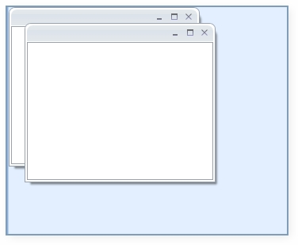
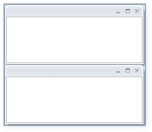
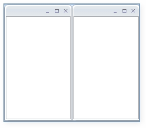

SetMDILayout() method is used to set the MDILayout of the child. There are three types of layouts that are available: They are:
· Cascade
· Horizontal
· Vertical
Cascade:
Cascade layout just cascades the window one by one as shown below:
|
[C#] DockingManager.SetMDILayout(MDILayout.Cascade); |

Figure 376: Cascaded Layout
Horizontal:
This layout arranges the MDI windows in a horizontal manner as shown below:
|
[C#] DockingManager.SetMDILayout(MDILayout.Horizontal); |

Figure 377: Horizontal Layout
Vertical Layout:
This layout arranges the MDI windows in a vertical manner as shown below:
|
[C#] DockingManager.SetMDILayout(MDILayout.Vertical); |

Figure 378: Vertical Layout